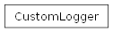

groupbuilder.core.logger module
- class groupbuilder.core.logger.ColoredLogger(stream=None)[source]
Bases:
StreamHandlerA custom logging handler that adds color to output messages.
This handler extends the built-in StreamHandler and overrides the emit method to add color to log messages based on their logging level.
emit(record)Override the emit method to add color to log messages.
- COLORS = {10: 'blue', 20: 'green', 30: 'yellow', 40: 'red', 50: 'magenta'}
Dictionary mapping logging levels to their corresponding colors
- class groupbuilder.core.logger.CustomLogger(application_name)[source]
Bases:
objectA wrapper around the built-in Logger class.
This class sets up a colored logger with a given application name and provides an easy way to create customized loggers for different parts of an application.
__init__(application_name)Initialize a new instance of the CustomLogger class.
- __init__(application_name)[source]
Initialize a new instance of the CustomLogger class.
- Parameters:
application_name (str) – The name of the application. Used as the logger name
- logger
The underlying logger instance